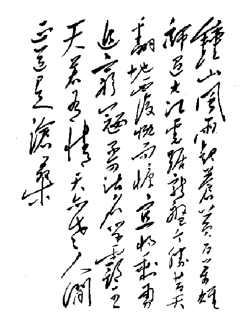

祝“台海戡乱办公室”早日成立，播放“人民解放军占领南京”（三版本）
2006/4/9 16:24:42
昨天“必须成立“台海戡乱办公室”督办台湾剿匪事宜！”已经把“台海戡乱办公室”成立的必要性和急迫性说了，预祝“台海戡乱办公室”成立，播放“人民解放军占领南京”。南京，前朝首都，被占领是一个历史事件，而前朝余寇的被歼灭是另一个应该过去但仍未来的重要历史事件，为此，重温一下“人民解放军占领南京”：
钟山风雨起苍黄, 百万雄师过大江。 虎踞龙盘今胜昔，天翻地覆慨而慷。 宜将剩勇追穷寇, 不可沽名学霸王。 天若有情天亦老, 人间正道是沧桑。
这首诗作为七律其实是有点不合格的，因为押韵上首先出了错，江字是不能和其他字同韵脚的，至于对仗有点合掌，以及抄用李贺的“天若有情天亦老”之点金为铁等就更不用说了。但作为歌词，这首诗也可以了，至少比现在那些乱七八糟的东西好很多了。
先来一个作者本身的字，客观评价，字比诗要好一点。

至于用这诗谱曲，下面三个版本在艺术上都至少配得上，甚至比诗要好！
第一版本
第二版本
第三版本